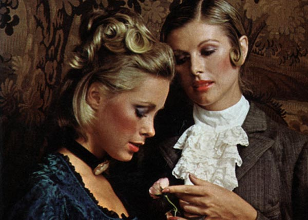
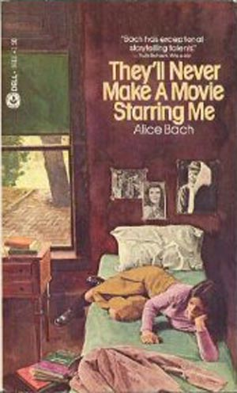
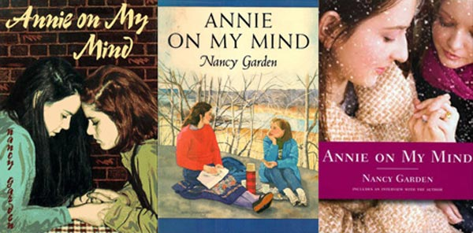

-
Teenagers in Love
by Sara Breselor June 2, 2011
Lesbian Literature for Ages 12 & Up
I never read a teen lesbian novel when I was actually a teen. In truth, I can’t recall reading anything even remotely lesbian-themed until I was in college. I often wonder if it would have made a difference. It stands to reason that reading coming-out stories should help with one’s own process of coming out, but I have my doubts. It has never stopped feeling strange to me that queerness is a political identity based on what are, arguably, the most private and intimate of human experiences. And I don’t think that having fictional gay role models would have helped me reconcile this contradiction, because mine was and is a literary objection: what should be extremely personal stories are compromised by external political motives elbowing their way in. The terms “queer” and “literature” don’t rest well together. But as much as I want “literature” to be the part that matters, I find that I am broadly incapable of keeping my own politics out of the way when I read.
My sister recently gave me a book she remembers borrowing from a public library years ago, during a family vacation on Cape Cod. She thought I had read it but, ironically, I suppose, I had not. They’ll Never Make a Movie Starring Me by Alice Bach was published in 1973, meaning it was already outdated by the time my sister found it. Alice, the narrator, is a sophomore at a girls’ boarding school called Southeby’s, where she despairs of meeting girls as “groovy” as her friends back in Manhattan until she is introduced to a smart, beautiful senior named Wendy. “What a neat girl,” thinks Alice.
Soon, Alice becomes maniacally obsessed with winning Wendy’s friendship. She reveres Wendy because she takes advanced classes and is going to Bryn Mawr; because she eats sundaes but doesn’t gain weight; because she has beautiful light-blue eyes and impeccable handwriting. “She’s just a girl,” says Alice’s friend Penny, tired of the hero worship, and Alice responds with unguarded devotion: “Of course Wendy’s just a girl, as you put it, but so was Einstein just a guy, if you want to put it that way. You can reduce anyone to simple proportions. I happen to think Wendy’s pretty special.”
When Penny respond, “We all know you think she’s pretty special,” something in Alice suddenly changes. “Just what’s that supposed to mean?” she demands. “I don’t like your insinuations.”
Penny is genuinely oblivious, (“God, you’re really screwed up. Nobody said anything was unusual.”) which is good luck for Alice, who has been inventing tales of promiscuity to impress Wendy with her “sophistication.” Her coup de grace in this department involves procuring an old diaphragm from her neighbor Carlotta to evidence a sexual relationship with a made-up boyfriend.
But here Alice stumbles into The Blunder, a classic moment in coming-out stories. Recurring throughout the history of lesbian literature, The Blunder is a moment of heartbreaking innocence. The young girl in love is too dumb and happy to realize that she needs to be much more careful. Stephen’s rash love letter to Angela Crossby in The Well of Loneliness; Jeanette’s naïve attempt to explain to her Christian missionary mother how important it was for her to have a “friend” like Melanie in Oranges are Not the Only Fruit; every story has one. In They’ll Never Make A Move Starring Me, Alice hadn’t questioned the nature of her feelings for Wendy; they were pure and overwhelming. But once she sees herself from Penny’s perspective, her situation with Wendy starts to crystallize into something she recognizes:
Penny was right, I was acting like a maniac. It was getting to the point where any time Wendy’s name was mentioned… I was becoming hysterical. I damn well better calm myself down or it’s going to be all over the school that I have a crush on Wendy. There. It was out. I had a crush on Wendy, and not on Donald, or Mickey McCormick, or any of Carlotta’s beaux. And if I kept acting this way, everybody at Southeby’s was going to guess. And no number of diaphragms would be able to wipe away what I myself was doing in daily conversations. So I’d better cool it. And fast.
There. It was out. The inner Alice has been projected onto the screen of the outer world (if only in her own mind), and she sees now what she couldn’t before: that it is dangerous, and that she has something to hide.
Typically, the blunder is the catalyst for the public outing of the protagonist. In a true coming-out story, Alice’s indiscretion would raise Penny’s suspicions, which would drive the plot towards some kind of public reckoning of her feelings for Wendy. But They’ll Never Make a Movie Starring Me is not that kind of story, and no one in Alice’s life notices the true intensity of her infatuation with Wendy. So Alice just does some more lying—devastated by the fact that Wendy has not chosen her for the senior-sophomore dance (a Southeby’s tradition, enigmatically called Spread, in which the upperclasswomen give the younger girls their class rings), she invents a scheme to go home for the weekend, telling her parents she is sick and telling her friends she’s planning a liaison with the fictional boyfriend. But by chance, while at home in New York City, Alice actually does go on a double date with her neighbor Carlotta (of the pilfered diaphragm) and two Dartmouth boys, “Pres” and “Tip”. She has a blast. The boys were “really cool, and just as much fun to be with as Nancy and Stacy or anybody else.” It is a pivotal moment. “I figured I’d finally come to the end of the bad part of my life,” she muses. “Tip was a boy and I really liked him. I sighed out loud. I was normal.” And there the story ends.
I couldn’t believe my sister hadn’t mentioned this infuriating development; all she had said was that the book “ended abruptly.” How dare Alice Bach suggest that a girl can just go out on one date and realize she’s “normal” after all!
At a family dinner not long after, my sister brought up the story of finding They’ll Never Make a Movie after all these years and how much it reminded her of high school: these girls, so obsessed with their class rings, all the silly traditions and rules. And without thinking, I blurted out, “But the whole thing is about a girl who has a massive crush on another girl and then she goes on a date with a guy and is, like, cured, and then it just ends!”
In the ensuing silence I could feel the leftovers turning from food into trash on the table. Immediately I understood that that my relationship with this book was different and unwholesome. My sister had not even noticed the lesbian theme. Like Penny and the rest of Alice’s “normal” friends, she didn’t even register that Alice’s crush had more serious sexual implications, and that the ending, politically, was more than just annoying. I was the one who understood the crush to be gay, and it made me feel lascivious. I wanted something from the book that my sister didn’t, and while my objections were not sexual, exactly, they were covered in a sort of sticky film of suggested intimacy.
It smarted. I am gay and it’s not a secret and the book did have gay undercurrents and it did bother me. There. It was out. But I dropped the subject, embarrassed.
What I treasure in coming-out stories is the moment before that political context intrudes, when love is not even conscious of being love. It is the fleeting moment when your intimacy can be your own without being a statement of who you are. Alice is an entirely unsympathetic character, but in the instant that she defends Wendy without thinking to edit what she’s saying, I love her.
My own dumb-and-happy phase was similarly brief and dangerous. I was sixteen years old. I obliviously told a friend that I would only go to junior prom if I could bring my new friend Linda as my date. It didn’t even seem suggestive to me. All I meant was that time spent with her was huge and electric and time spent without her was just wasted.
One night, at Linda’s house, I called home to say I was staying over, something I would have done with any other friend. Why would I lie? But it was there, darkening the edges of my consciousness: a vague feeling that I should lie. I spent the night on a futon in her living room, parsing my unease. I wasn’t doing anything wrong, and yet I could see, finally, that other peoples’ ideas about what I was doing mattered more than my own.
What followed shortly thereafter was dinner at an Indian restaurant. My parents sat across from me in a dark velvet booth and told me they didn’t want me to spend time with Linda anymore. She was a bad influence, they said.
That she was not a bad influence — that she was decent and kind and took me to poetry readings, that if there was only one chair she sat on the floor, that we said “I love you” but had never even kissed — wasn’t a case I bothered to make. A good protagonist, role model that she is, should have taken this opportunity to triumphantly come out. I was not that kind of protagonist. I was embarrassed and scared, and I didn’t fight for Linda at all. I just let her go.
The first explicitly lesbian novel for adolescents, Ruby by Rosa Guy, appeared in 1976, three years before They’ll Never Make a Movie Starring Me was published and nearly twenty years before that night at the Indian restaurant. It’s a terribly conflicted book. Ruby, an insecure West Indian teenager in Harlem, becomes involved with a classmate named Daphne. Physically imposing at six feet tall and an intelligent, political autodidact, Daphne tutors and enlightens Ruby, guides her and protects her, but is also fickle and often cruel, and Ruby’s self-hatred is regularly given voice in Daphne’s brutal tirades about her character. Ruby and Daphne never struggle with being gay, but Ruby is intensely afraid of exposing their love to the outside world. Classic children’s literary capers (Ruby lowers Daphne out her bedroom window on a rope of bedsheets) are reshaped to hold the dangers of illicit adult love (Daphne almost falls to her death). The ending of Ruby is another astounding disappointment: Daphne leaves Ruby, who never has to confront her loving but viciously oppressive father and is heartened by a possible reunion with her ex-boyfriend.
Nancy Garden’s 1982 novel Annie on My Mind, perhaps the best-known teen lesbian book, is an explicit reaction to Ruby—in a 2007 interview, Garden noted that Ruby was an important milestone, “but the girls have no real gay consciousness; one doesn’t get the impression that they’re actually lesbians.” Garden is determined to show a happy and healthy life for queer teens as a matter of political propriety. She sets up the coming out story as a moral battle, a well-worn device in children’s literature. Similar to the way in which the smallest child, if brave and pure of heart, can overcome cruel and powerful adults, beastly evils, bullies, and monsters; the young lesbian can, with the strength of her love, triumph over the blinkered and ignorant denizens of the homophobic world. The figures of good and bad are exaggerated to keep the lines clear. Liza, Garden’s protagonist, has to face down Mrs. Poindexter, her principal, a shrewish old woman in half-glasses. Mrs. Poindexter discovers Liza’s relationship with her girlfriend Annie and puts her through a public trial in which she must confess her sexual relationship to her parents and the entire board of trustees at her school. And although Liza wavers, she eventually succeeds in coming out. “Remember,” she tells Annie, “about the truth making one free? Annie—I’m free now. I love you. I love you so much!”
Annie on My Mind is as rapturously prissy as it is politically flawless. But the novel’s central plot device — pitting the protagonist against larger-than-life moral resistance — became the norm, and most stories that followed simply revised Garden’s exaggerated coming-out struggle according to each author’s perception of young readers’ needs. Bett Williams’s 1998 Girl Walking Backwards, full of raves, ecstasy, booze, self-mutilation, and jaded high-school kids overseen by self-absorbed and dangerously negligent adults, is clearly a reaction to Annie on My Mind’s sanitized narrative. Still, despite being surrounded by relentless damage, narrator Skye begins a promising relationship with a relatively sane volleyball player named Lorri. And unlike our heroines of the 1970s, Skye never questions or hides her sexuality, nor does she deign to feel a moment of shame or fear, despite the distended resistance of her mother, an unstable New Age “light junkie” who wants to hypnotize her back into heterosexuality.
More recently, Leanne Lieberman’s Gravity (2008) pits the sexual awakening of lesbian teenager Ellie Gold against her orthodox Jewish upbringing. Yet even Ellie, facing down the Torah, makes the proper choice about repression: after months of biting her mouth until it bleeds and pulling out her own hair to stop herself from thinking dirty thoughts, she decides that she can give up neither her faith nor her true nature, but will find a girl at shul with whom she can share a life that is both queer and in-keeping with Jewish tradition.
I see so much regret, so many should-haves in these various attempts to revise and correct the coming-out story for young adults. There is sweetness in telling teenagers to be brave, to stand up for love, and to slay the homophobic dragon. But authors smile through gritted teeth, so determinedly invulnerable that their happy endings invariably feel false.
Maybe the new generation really is better at this process than I was. I erased Linda from my life during my senior year and dated my friend’s older brother. I was relieved to be back to normal. As high as I might stand on my soapbox, no one resembles the teenage me more than Alice. I didn’t come out to my family until I was twenty-six, ten years of burying my most loving and honest self. It’s a tragic irony in the most literary sense: the character’s secrecy destroys the very relationships she is trying to preserve. I tracked Linda down and reestablished our friendship, but this is as close as I have ever come to apologizing.
The more refined these coming-out stories are as instructional tools, the less literary they become, and the less true. It is second nature to judge their politics; it is the responsibility of being an “actual lesbian.” But the best thing that could happen to the young-adult literary world would be for somebody to slip up and say what they really feel.